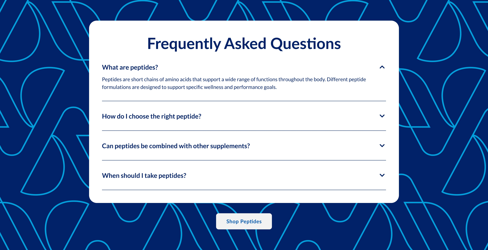
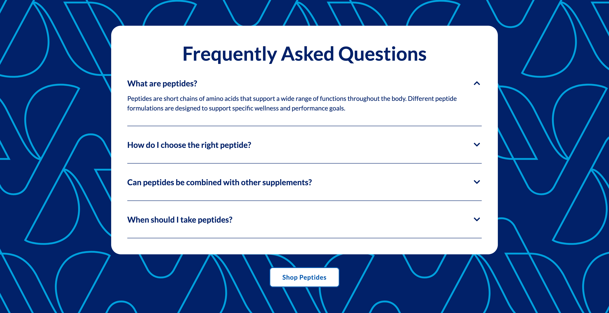
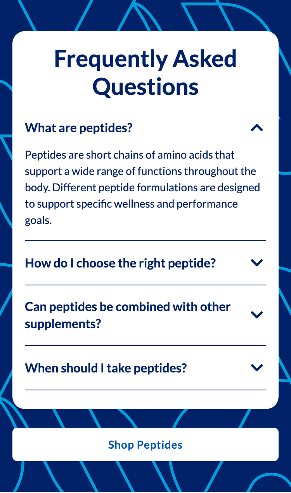
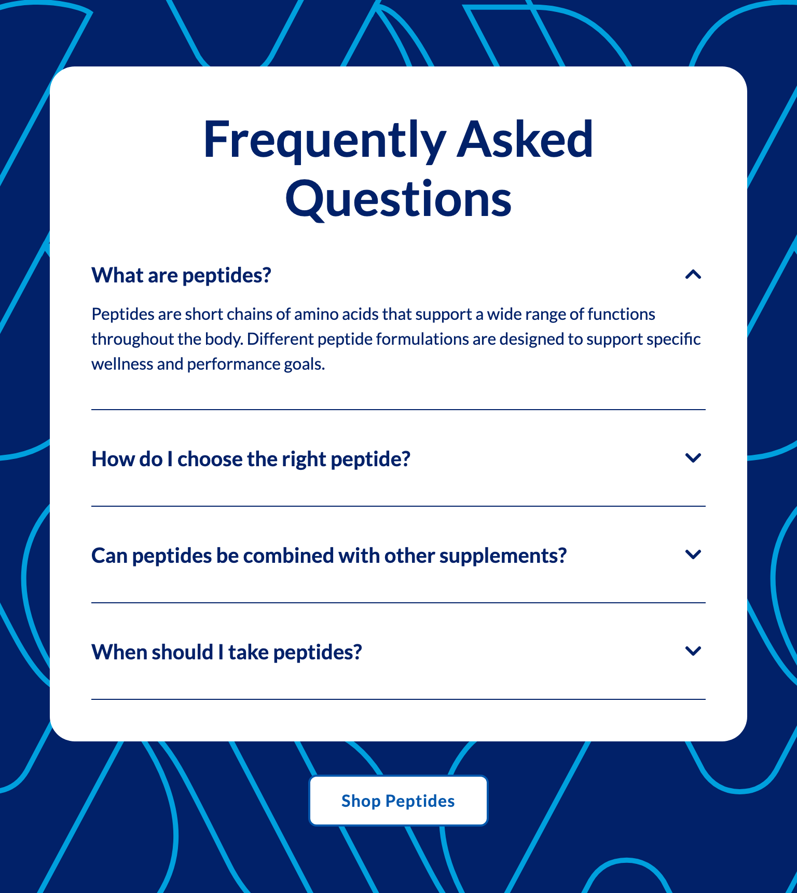
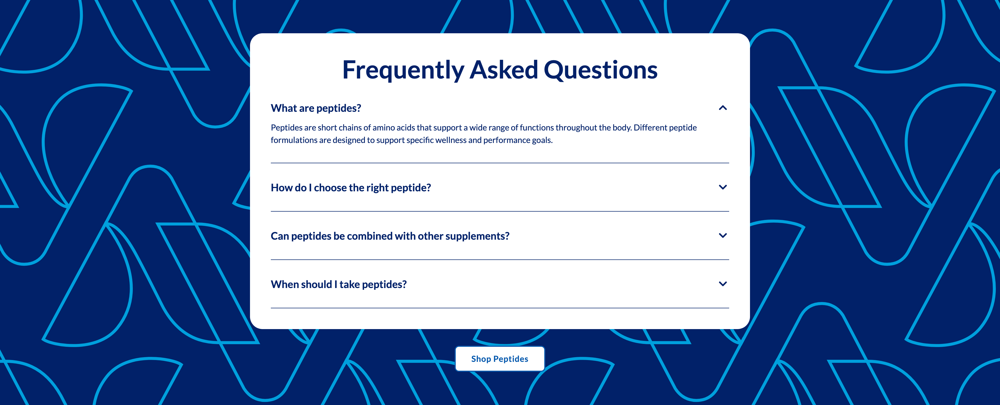

Platter component
Frequently Asked Question
Transcribed from Confluence, authored by Sarah Lee, status INTERNAL REVIEW. It is the client's spec, reproduced verbatim in substance. Where our implementation deviates it is recorded under Deviations, not by editing the spec.
Spec: https://getplatter.atlassian.net/wiki/spaces/TVS/pages/897220661/FSD+Frequently+Asked+Question
02 — Screenshots
How it renders
Wipe the handle across the design to find where the build drifts from it. The Figma frame and the capture are exported at the same width, so anything that moves under the handle is a real difference. Every width is below as a plain capture.





03 — Fields
What a merchandiser fills in
Generated from _schema.ts, in the order Amplience shows them.
| Field | Type | Constraints | Description | |
|---|---|---|---|---|
headingHeading |
string | required | max 90 min 1 |
The headline above the questions, e.g. "Frequently Asked Questions". Wrap words in _underscores_ for italic and **double asterisks** for bold. Write ~12~ for subscript; a registered mark (®) is raised automatically, and a plain asterisk is never formatting. It is centred and wraps to a second line rather than shrinking, and the card grows to fit. |
headingLevelHeading level |
string | h1 · h2 · h3default "h2" |
Choose h1 only if this module is the first thing on the page and no other h1 exists. Otherwise leave it as h2 — two h1s on one page hurts SEO. Choose h3 when the module sits underneath a section that already has an h2, so the page's heading order stays unbroken. This changes nothing you can see: the size is set separately below. | |
headingSizeHeading size (desktop / mobile) |
string | 64px / 38px · 56px / 34px · 48px / 30px · 36px / 24px · 28px / 20px · 20px / 16pxdefault "48px / 30px" |
A fixed pair from the TVS type scale — the first size applies from tablet up, the second on phones. 48px / 30px is the design. Going larger pushes the first question below the fold on a phone; 20px / 16px is the same size as a question, so the headline stops reading as a heading. | |
headingFontHeading font |
string | Lato · corisanderegular · Fieldsdefault "Lato" |
Lato is the site's heading typeface and the safe choice. Corisande is its body typeface — pick it when the module needs to sit closer to surrounding editorial copy. Fields is the serif used in the newer designs; it is not yet installed on vitaminshoppe.com, so until it is, headings set in Fields fall back to Georgia and will not look identical on every device. | |
questionsQuestions |
array | required | Between three and seven question-and-answer pairs, shown in the order you list them here. Drag a row to reorder it. Only one answer is open at a time — opening one closes the others — and the first is open when the page loads. Write questions that cover the category rather than a single product, so "How do I choose the right peptide?" rather than a dosage question about one SKU. | |
backgroundImageBackground image |
string | required | min 1 | Full URL of the artwork behind the card. The design is the TVS 'V' mark drawn in light blue outline on navy, supplied as an SVG so it stays sharp at any width — jpg and png work too. It is scaled to cover the section and centred, so upload one full-width composition rather than a small tile. It sits behind the content and is decoration, so it needs no alt text — do not put anything readable in it. |
backgroundImageMobileBackground image (mobile) |
string | max 500 | Full URL of the phone version. Falls back to the desktop artwork when empty, which is usually right — the design is the same drawing at a smaller scale, and covering the section already does that. Supply one only if the line-art reads as too dense at phone width. | |
ctaLabelButton label |
string | max 30 | The call to action under the card, e.g. "Shop Peptides". The button only renders when both a label and a link are set. On phones it stretches the full width of the card. | |
ctaUrlButton link |
string | max 500 | Where the button goes. Use a relative path for vitaminshoppe.com destinations. | |
ctaStyleButton colour |
string | dark · light · outlinedefault "light" |
Light is white with #0458AD text and is the design — the button sits on the navy background below the card, where white reads clearly. Dark is #0458AD with white text, which on that same navy ground is blue on blue and very hard to see. Outline is transparent with a black edge, which on navy is close to invisible. Only pick Dark or Outline if you have changed the background to a light colour. | |
sectionIdSection ID |
string | max 50^[a-z][a-z0-9-]*$ |
A name for this specific module, used for two things. A link anywhere on the site can jump straight to it by ending the URL with # and this name, e.g. #peptide-faq. Page-level CSS can also target this one module rather than every FAQ. Use lowercase letters, numbers and hyphens, start with a letter, and make it unique on the page — two modules sharing an ID will break the jump link. Leave empty if you need neither. |
04 — Sample content
A filled-in example
From _content.json. This is what the screenshots above are rendering.
{
"heading": "Frequently Asked Questions",
"headingLevel": "h2",
"headingSize": "48px / 30px",
"headingFont": "Lato",
"questions": [
{
"question": "What are peptides?",
"answer": "Peptides are short chains of amino acids that support a wide range of functions throughout the body. Different peptide formulations are designed to support specific wellness and performance goals."
},
{
"question": "How do I choose the right peptide?",
"answer": "Start with the goal rather than the ingredient. Recovery, lean muscle support and everyday wellness each point to a different formulation, and the product pages group them the same way so you can compare like with like."
},
{
"question": "Can peptides be combined with other supplements?",
"answer": "In most cases yes, and many routines pair them with protein or creatine. Check the supplement facts panel on each product for overlapping ingredients, and speak to your healthcare provider before combining anything new."
},
{
"question": "When should I take peptides?",
"answer": "Timing depends on the formulation. Some are designed for the morning on an empty stomach, others sit better alongside a meal or after training. Every product page lists its own suggested use."
}
],
"backgroundImage": "../assets/faq-background-1512.svg",
"backgroundImageMobile": "",
"ctaLabel": "Shop Peptides",
"ctaUrl": "#bodytech-elite",
"ctaStyle": "light",
"sectionId": "peptide-faq"
}05 — Design reference
Design reference
The Confluence page embeds two screenshots; the frames below are the same two designs on the Figma file, which is the authority for measurements.
| Variant | Desktop | Mobile |
|---|---|---|
| FAQ | Figma 18227:422065 — 1512 × 776 | Figma 18227:426917 — 375 × 628 |
Both frame heights are Hug, so those numbers are the design's content height at four questions with the first expanded, not a fixed frame.
Frame and card
| Measure | Desktop | Mobile |
|---|---|---|
| Section padding | 64 top / 64 bottom, 48 inline | 40 top / 40 bottom, 16 inline |
| Gap, card to button | 32 | 24 |
| Card | 960 × 566, radius 24 | 343 × 481, radius 16 |
| Card fill | #ffffff, no shadow, no border | #ffffff, no shadow, no border |
| Card padding | 40 all four sides | 16 top / 16 inline / 24 bottom |
| Gap, heading to list | 32 | 24 |
The card is horizontally centred: (1512 − 960) / 2 = 276. Its 960px width is the Page Width Figma variable.
This section flips at md (768) rather than at lg, and that is safe here for a reason worth stating: sections/CLAUDE.md warns that a composition drawn only at 1512 usually cannot flip at 768, because fixed-px columns starve whatever is left — the Expert Module's 158px quote is the worked example. The FAQ has no fixed-px anything. It is one fluid text column whose only horizontal constraints are a max-width and padding, so at 768 the card simply narrows and the desktop type and 40px padding still fit. Verified against the 768 capture.
Accordion
| Measure | Desktop | Mobile |
|---|---|---|
| Gap between rows | 32 | 16 |
| Closed row height | 60 | 40 one-line, 60 two-line |
| Open row height | 120 | 157 |
| Question row | 28 | 24, set by the chevron |
| Gap, question to answer | 12 | 12 |
| Gap, content to divider | 32 | 16 |
| Row pitch, closed | 92 | 56 one-line, 76 two-line |
The question row is space-between with zero padding above it — the only breathing room inside a row is below the content, before the divider. Every row carries a divider, including the last; there is no final-row exception in this design.
Type and colour
| Element | Desktop | Mobile |
|---|---|---|
| Heading | Lato Bold 48 / 120% | Lato Bold 30 / 120% |
| Question | Lato Bold 20 / 140% | Lato Bold 16 / 140% |
| Answer | Lato Regular 16 / 150% | Lato Regular 14 / 150% |
| Button label | Lato Bold 16 / 110%, 0.04em | Lato Bold 14 / 110%, 0.04em |
Heading, question, answer, divider and chevron are all #012169 (sections/text-main) — the answer is not muted relative to the question. The section ground is #012169; the line-art is #00A0DD.
The heading pair 48 / 30 is exactly the shared headingSize default, so this section takes the vocabulary field unchanged.
Chevron
24 × 24 box, inner glyph 12 × 6, stroke #012169 at 3px, round cap and join, path M1.5 1.5L7.5 7.5L13.5 1.5. Flush right, vertically centred on the whole question block. Open state is the same node rotated 180°, so it points up. The raw Figma x/y differ between states only because Figma reports a rotated node's pre-rotation origin; both render in the identical box.
Background
The blue is a solid #012169 fill on the section frame. The line-art is a separate visible vector group (18227:426635 desktop) of 137 stroked paths — #00A0DD, no fill, stroke-miterlimit: 10, drawn far larger than the frame and clipped to it.
There is no raster anywhere in the design: a full node-type census of the 1985-node desktop frame returns zero image, rectangle or rect nodes.
Desktop and mobile are the same artwork at a uniform 2.2× scale, not two different compositions:
| Desktop | Mobile | Ratio | |
|---|---|---|---|
| Motif | 324.5 × 271.9 | 147.5 × 123.6 | 2.20 |
| Stroke weight | 4.538 | 2.063 | 2.20 |
The motif is the TVS "V" mark as two open stroked paths on a diagonal lattice. #00A0DD is a raw hex on the vectors, not a Figma variable, so there is no token to bind it to.
The desktop frame also contains a hidden group of four 756 × 676 tiles (18227:422066), visible: false, painting nothing. It is a leftover copy of the Benefits Highlight background, switched off and replaced by the treatment above. Its 3040 vectors are the same motif geometry as the visible group — normalised path coordinates match to four decimals — at a uniform 20.25× smaller scale, and they are filled #41b6e6 with no stroke rather than outlined.
That makes the relationship between the two sections precise, and it is worth stating because the two FSDs carry an identical Decorative Background line:
| FAQ | Benefits Highlight | |
|---|---|---|
| Frame | 18227:422065 | 18227:403166 |
| Motif | same geometry | same geometry |
| Scale | 20.25× larger | baseline |
| Paint | outlined #00A0DD, 4.538px stroke, no fill | filled #41b6e6, no stroke |
| Layout | one clipped 2969 × 2014 group | four 756 × 676 tiles, 2 × 2 |
Same brand mark, deliberately different treatment. The Benefits Highlight background spec must not be ported to this section.
06 — User requirement
User requirement
- User can tap a question to expand/collapse the answer.
- Only one item can be open at once.
- User can click the CTA to navigate to the linked destination.
07 — Admin requirement
Admin requirement
| Content type | Functional requirement | Asset / copy requirement | Responsive & content behavior |
|---|---|---|---|
| Heading (Required) | Admin can edit the section heading. | ||
| Q&A Pair (Required, x3-7) | Admin can add 3-7 question/answer pairs; reorder pairs. Content should be category-scoped ("How do I choose?"), not single-SKU dosage questions. | Copy: 40-60 words per answer | |
| Decorative Background (Required) | Admin can upload an image for desktop and mobile separately. | ||
| Button (Optional) | Admin can input a single primary CTA label and destination URL. Admin can change the button color (Dark vs Light). | Dark: #0458AD with white text. Light: white with #0458AD text. |
08 — Other requirements
Other requirements
- Follows FSD: Global SEO Rule.
- Analytics: component supports automated impression tracking (viewport entry) and click tracking via the standard
raiseEventhandler.
09 — Open comments
Open comments
Sarah Lee — unanswered 2026-07-29
unanswered 2026-07-29
@Felix Tellmann ready for review
Felix Tellmann — unanswered 2026-08-07
unanswered 2026-08-07
Both frames contain a hidden tabs with slider component — a six-tab FAQ category filter (18227:426878 desktop, 18227:427161 mobile). The FSD does not mention category filtering, and the component reads as parked rather than in progress: its inner row (697px) overflows its own frame (676px) and its y position collides with the FAQ list. Treated as out of scope. Confirm it is not expected in this release.
Felix Tellmann — unanswered 2026-08-07
unanswered 2026-08-07
The CTA's Figma component carries contradictory naming: the variant properties say Hierarchy=Primary, while the main component's own description string says button-secondary. Our components/button.css already resolves this by naming the class for the button's own colour rather than for either label, so nothing is blocked — but the Figma component should be corrected so the next section does not have to re-derive it.
Felix Tellmann — resolved 2026-08-10
resolved 2026-08-10
The Admin requirement asks for a decorative background uploaded as an image, desktop and mobile separately. This asked whether merchandisers genuinely need to replace the artwork per placement, or whether the TVS pattern is a brand constant with the colours exposed as controls.
Resolved: it is an upload, exactly as written, and there are no colour controls. The question presumed the design "is not an image" because it is drawn as vectors — but an SVG is a file you upload like any other, and the distinction never mattered to the field. Asking it is what produced the withdrawn block design recorded under Deviations.
10 — Deviations
Deviations
The decorative background is an uploaded image, as specified
Corrected 2026-08-10
backgroundImage and backgroundImageMobile hold a URL each — the shared decorativeBackgroundFields pair, alt-free by design and already shipped by testimonials — and the section renders them through the same <picture> the background-image pattern standard already uses. That is the Admin requirement above, unmodified: "Admin can upload an image for desktop and mobile separately", and it is Required there, so it is required here.
The fields are deliberately not the decorativePattern pair, which is the same shape under a worse name. "Pattern" promises a repeating tile; this asset is a single composition that is covered and centred, so the name would describe the wrong thing at the only moment it matters — a merchandiser deciding what to upload. benefits-highlights genuinely does tile, and keeps that pair.
An earlier draft of this deviation said the background was Not built and routed it through a proposed shared pattern-background block — docs/specs/2026-08-07-pattern-background-block-design.md — which would have inlined the motif as an SVG <pattern>, exposed its colours as five CSS tokens and two paint modes, and needed the paths exported from Figma before anything could render. That design has been withdrawn. It existed to make the motif's colours themable, which nothing in this FSD asks for: #00A0DD is a raw hex on the vectors with no Figma variable behind it, and the spec's own case for inlining was that a URL-referenced SVG cannot read page CSS — true, and irrelevant when there are no page variables to read. The cost was a section blocked for three days on an export it never needed, while benefits-highlights had already shipped the same requirement as a plain URL field.
The artwork is an SVG, so it stays sharp at any width; nothing about the field is SVG-specific.
The two crops are covered and centred rather than tiled. The FAQ asset is one 1512 × 776 composition rather than a repeat tile — measured against the Figma export, the lattice does have a 652 × 414 period with a 364 stagger at the half-row, so a true tile is possible later without any change to the field or the markup.
The sample asset has Figma's export mask stripped, and a re-export will bring it back. Figma wraps the 48 stroked paths in a mask-type: luminance mask whose rect spans 0,−0.22 to 1512,1359 — larger than the 1512 × 776 viewport in every direction, so it clips nothing the viewBox does not already clip. It is not free: measured in Chrome over 12 warm rasterisations at 1512 × 776, the masked file costs 0.75ms each against 0.14ms without it, because the mask forces an offscreen compositing pass. Removing it changed 2 pixels out of 1,173,312, both at 25% alpha — antialiasing noise, not artwork. Worth redoing on any future export.
Impression tracking is not implemented
Not built
Other requirements asks for "automated impression tracking (viewport entry)". Only click tracking ships here, via the standard raiseEvent('ItemClick', …) handler with the shared { ctaLabel, destinationUrl, moduleTitle } payload. This matches every section built so far — impression analytics is an open item across the whole project, first raised in the Slim Hero's FSD, and it should be solved once for all modules rather than invented separately in this one.
Questions are ARIA headings rather than <h3> elements
Built
Each question sits in a role="heading" element with a computed aria-level, one step below whatever headingLevel the merchandiser chose, capped at 6. The level has to follow that choice to keep the page's heading order unbroken, and building a tag name from a merchandiser value is the injection root CLAUDE.md forbids outright. role="heading" with aria-level is the documented ARIA equivalent and exposes the identical structure to assistive technology.
That heading now sits inside the <summary> rather than wrapping the control, which is the inverse of the arrangement sections/CLAUDE.md describes for a <button>. <summary> has to be the first child of its <details>, so there is nowhere outside it to put the heading, and heading-inside-disclosure is the arrangement the HTML spec itself shows for an accordion. The carve-out is recorded in that file next to the rule it bends.
The accordion is a native <details>, not a scripted <button>
Corrected 2026-08-10
The question row was a <button> whose open state the section tracked in Alpine. On a live LP it rendered as a 12px sans-serif pill in TVS blue, 170px wide: .site-wrapper button in tvs-header.css sets background, color, font-size, font-family, width, padding, border, min-width, text-transform and outline at (0,1,1), which beats every Tailwind utility and every one-class component rule we can write at (0,1,0). base.css reclaims only min-width and text-transform. The local preview has no .site-wrapper ancestor, so it looked correct throughout.
A <summary> carrying the identical class renders correctly on the same page: TVS style no summary at all, and the only rule of theirs reaching the subtree is a harmless details { display: block }. Verified with a probe element on qa1 /lp/platter-template-1a, 2026-08-10.
What the element change buys beyond the styling: name makes "only one open at once" the browser's job rather than section state, and the disclosure keeps working before Alpine hydrates. aria-expanded and aria-controls are gone — <summary> exposes its own expanded state natively, and restating it is a documented ARIA anti-pattern.
Resting geometry is unchanged: question row 28, closed-row pitch 93, open row 88.
The open/close transition raises the browser floor
Built
The FSD is silent on motion; the rows previously appeared and disappeared instantly. They now animate over 250ms, driven by grid-template-rows: 0fr -> 1fr on ::details-content with content-visibility transitioned allow-discrete so the content survives the collapse.
::details-content is Chrome 131, Safari 18.4, Firefox 139 — later than the color-mix() floor components/button.css already set at mid-2023, and so the newest thing this project ships. Where it is missing, the disclosure opens and closes instantly, which is exactly the previous behaviour; nothing else about the section depends on it.
The timing is linear rather than eased. Opening one row closes another, so two rows animate at once in opposite directions, and under an ease curve the closing row sheds most of its height in the first half while the opening row gains most of its own in the second — everything below the pair drops and then climbs back. Linear keeps the two rates equal and opposite for the whole duration, so the net height change is monotonic.
The section renders 4px taller than the Figma frame
Built
Measured: our desktop capture is 1512 × 780 against Figma's 1512 × 776, and mobile 375 × 634 against 375 × 628.
The cause is the divider, and it is a difference in how the two tools express a rule rather than a spacing error. Figma draws each one as a LINE node of height 0 with a 1px stroke set to strokeAlign: CENTER, so it straddles the row's bottom boundary and contributes nothing to layout — which is why Figma's own closed-row pitch arithmetic reads 28 + 32 + 0 + 32 = 92. In CSS the equivalent element occupies its own pixel of flow, so each of the four rows is 1px taller and the section gains 4px.
Confirmed in Chrome against the built artifact rather than inferred from the captures. Measured on the desktop layout:
| Measure | Design | Ours |
|---|---|---|
| Question line box | 28 | 28.00 |
| Divider | 0 | 1.00 |
| Closed-row pitch | 92 | 93.00 |
The question's line box is exactly 28.00px — 20px × 1.4, the design value to the hundredth — so the extra pixel is not leading. 93 = 28 + 32 + 1 + 32 against the design's 28 + 32 + 0 + 32 = 92, and the whole difference is the divider's own height.
A screenshot comparison read the excess as growing with line count and pointed at the line-height token instead. It does not: the two-line mobile question is 16px × 1.4 × 2 = 44.8, which Figma reports rounded to 44, so that row carries +0.8 of rounding on top of the same 1px divider and only looks like a per-line effect. The token is correct at both breakpoints.
Not corrected, deliberately. Removing it would mean pulling each divider out of flow with a negative margin to shave a single pixel, which trades a real 1px rule for a fragile offset and makes the gap below each divider 31px where the design says 32. Every gap, padding and type size matches the design exactly; the only difference is that our rules have thickness and Figma's do not.
The CTA contributes a further sub-pixel on mobile: its computed height is 43.4px (14 + 15.4 + 14) against Figma's reported 43.
The first question is expanded when the page loads
Built
The FSD requires only that one item be open at a time, and is silent on the initial state. Both Figma frames draw the first row expanded, so that is what ships. Tapping an open question collapses it, leaving none open, which the FSD's "expand/collapse" wording requires.
On a reload or a back-navigation the browser restores whichever row the shopper last had open, not the first. That is native <details> state restoration, the same mechanism that restores scroll position and form values, and it arrived with the move off a scripted <button> — the previous build re-ran its own openIndex: 0 on every load and always showed the first row. Left alone deliberately: returning someone to the answer they were reading is better than resetting them, and suppressing it would mean fighting the platform for a worse outcome. QA will see it as an inconsistency, so it is recorded here rather than left to be rediscovered — a genuinely fresh load is always the first row.
The background image carries no alt text field
Built
The FSD groups the background under an upload requirement, which elsewhere in this project pairs with a required imageAlt. This background is decorative by the FSD's own name for it and conveys nothing the surrounding copy does not, so it is exposed to assistive technology as alt="" rather than as an image needing description. WCAG 1.1.1 treats a described decorative image as a defect, not an improvement.
The CTA fills #FFFFFF rather than Figma's #F2F2F2
Built
Inherited from components/button.css, which already made this call for every section: the FSD states Light as "white with #0458AD text" and the FSD is the contract. The two values are a hair apart. That component also adds a #0458AD border the Figma does not draw, because a white fill on a white card has a 1.00:1 boundary against it and WCAG 1.4.11 asks for 3:1. On this section's dark ground the border is barely perceptible, so nothing about the Figma look is lost here.